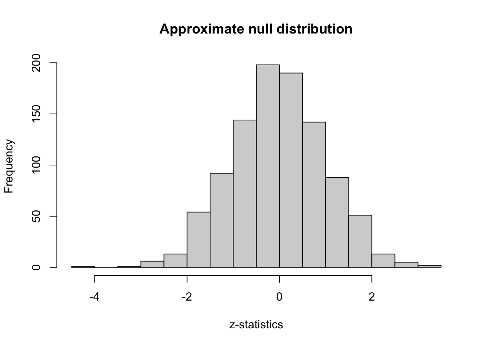
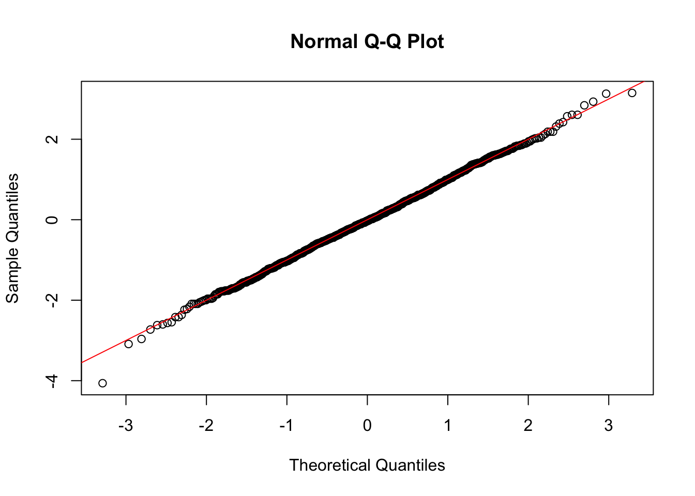
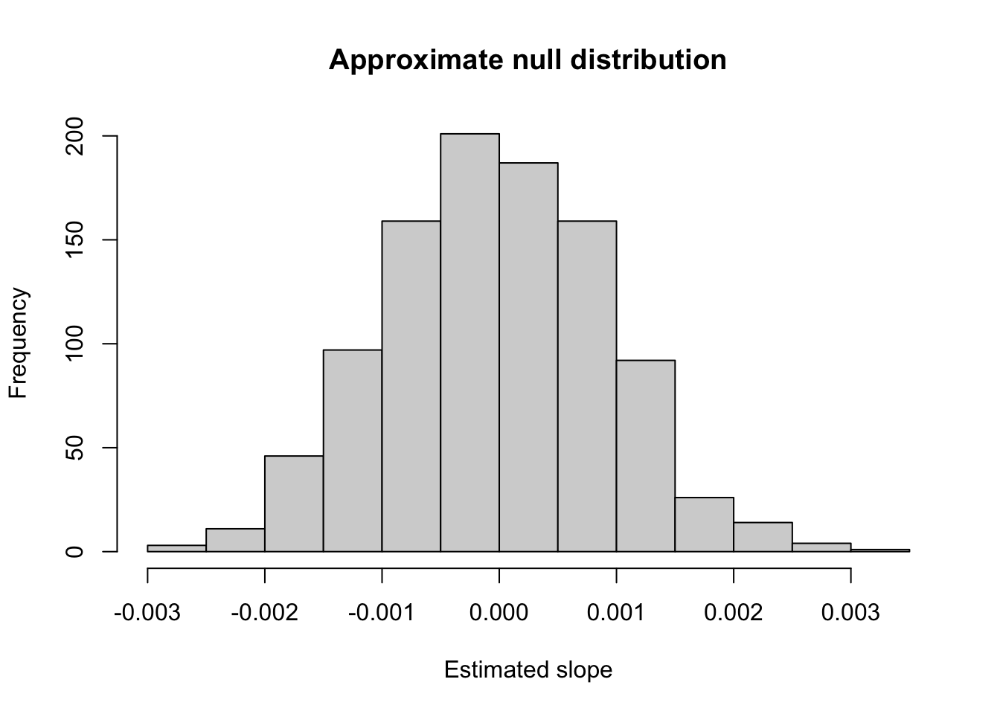
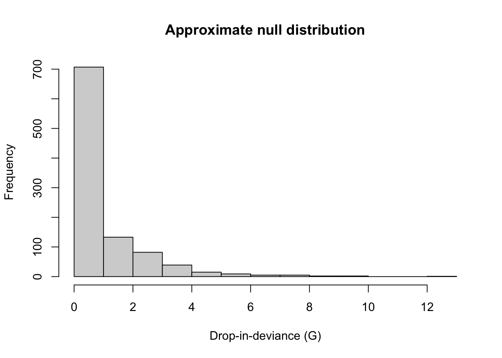
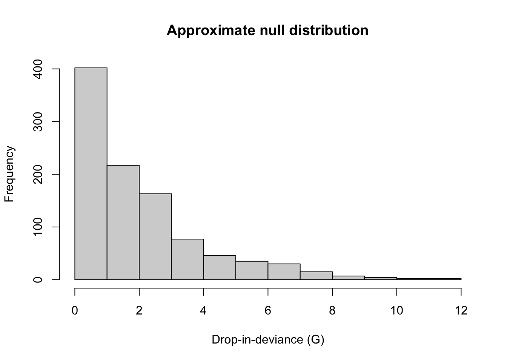

library(tidyverse)
grad_app <- read.csv("https://stats.idre.ucla.edu/stat/data/binary.csv")
nreps <- 1000 # number of repetitions
z_stats <- rep(NA, nreps) # place to store results
for(i in 1:nreps){
grad_app_perm <- grad_app |>
mutate(gre = sample(grad_app$gre, n(),
replace = F))
perm_mod <- glm(admit ~ gre, family = binomial,
data = grad_app_perm)
z_stats[i] <- summary(perm_mod)$coefficients[2,3]
}Class activity: hypothesis testing and null distribution
Approximating the null distribution with permutations
When testing the hypothesis \(H_0: \beta_1 = 0\), we can use the test statistic
\[z = \dfrac{\widehat{\beta}_1}{SE(\widehat{\beta}_1)}\]
To calculate a p-value, we need to know the distribution of \(z\) if \(H_0\) were true. This is called the null distribution. We will approximate this null distribution by permuting the explanatory variable, and calculating the test statistic for each permutation.
Here is the code we wrote in class:
Questions
- Run the code, and create a histogram of the \(z\)-statistics. Describe the shape of the distribution.
Solution:
library(tidyverse)
grad_app <- read.csv("https://stats.idre.ucla.edu/stat/data/binary.csv")
nreps <- 1000 # number of repetitions
z_stats <- rep(NA, nreps) # place to store results
for(i in 1:nreps){
grad_app_perm <- grad_app |>
mutate(gre = sample(grad_app$gre, n(),
replace = F))
perm_mod <- glm(admit ~ gre, family = binomial,
data = grad_app_perm)
z_stats[i] <- summary(perm_mod)$coefficients[2,3]
}
hist(z_stats, xlab = "z-statistics", main = "Approximate null distribution")
The null distribution appears to be approximately normal, with a mean of 0 and a standard deviation of 1.
The p-values reported in the coefficients table in R are calculated with a \(N(0, 1)\) distribution as the null distribution. We can compare the \(z\)-statistics from our permutations to the \(N(0, 1)\) distribution with a QQ plot:
qqnorm(z_stats)
abline(a = 0, b = 1, col="red")- Create the QQ plot. Do the statistics appear to follow a standard normal distribution?
Solution:
qqnorm(z_stats)
abline(a = 0, b = 1, col="red")
Remember that when interpreting a QQ plot, we are looking for whether the points fall on a diagonal line; that is, that the observed quantiles from the sample data match up with the theoretical quantiles of the supposed distribution. Here we can see that the points are all close to the line (in red), which indicates that a standard normal distribution is reasonable for the null z-statistics.
The z-statistics we calculate divide the estimated coefficient \(\widehat{\beta}_1\) by its standard error. We may wonder why we don’t just use \(\widehat{\beta}_1\) as the test statistic (without standardizing).
- Modify the code above so that we save the estimated slope \(\widehat{\beta}_1\), instead of the z-statistic.
Solution:
nreps <- 1000 # number of repetitions
beta_stats <- rep(NA, nreps) # place to store results
for(i in 1:nreps){
grad_app_perm <- grad_app |>
mutate(gre = sample(grad_app$gre, n(),
replace = F))
perm_mod <- glm(admit ~ gre, family = binomial,
data = grad_app_perm)
beta_stats[i] <- summary(perm_mod)$coefficients[2,1]
}
hist(beta_stats, xlab = "Estimated slope", main = "Approximate null distribution")
- What does the null distribution of the estimates \(\widehat{\beta}_1\) look like?
Solution: The null distribution appears normal, with a mean of 0. However, it is not a standard normal distribution, because the standard deviation of the \(\widehat{\beta}_1\) values is approximately 0.001 (rather than 1).
- Why do we use the z-statistic as our test statistic?
Solution: Under the null hypothesis, \(\widehat{\beta}_1\) will have an approximately normal distribution. However, \(SE(\widehat{\beta}_1)\) depends on the data that we collect, and will be different for different datasets and variables. By standardizing (computing the z-statistic), we allow ourselves to always work with the same distribution under \(H_0\): a standard normal, \(N(0, 1)\)
Another approach: change in deviance
One way of testing the hypotheses \(H_0: \beta_1 = 0\) vs. \(H_A: \beta_1 \neq 0\) is to compare nested models.
Reduced model: If \(H_0\) were true, then the model for the grad acceptance data above would be
\[\log \left( \dfrac{\pi_i}{1 - \pi_i} \right) = \beta_0\] This is called the reduced model.
Full model: If \(H_0\) is not correct, then the model for the grad acceptance data would be
\[\log \left( \dfrac{\pi_i}{1 - \pi_i} \right) = \beta_0 + \beta_1 GRE_i\]
Just like an \(F\)-test in linear regression compares the SSE of full and reduced models, in a GLM we can compare the deviance between full and reduced models.
Drop-in-deviance statistic
In particular, our test statistic is the change in deviance:
\[G = \text{deviance}_{\text{reduced}} \ - \ \text{deviance}_{\text{full}}\]
- Fit the full model on the original
grad_appdata (not the permuted data), and report the deviance. (Note: you can extract the deviance of a model with$deviance. For example, if my fitted model was calledm1, I would usem1$deviance)
Solution:
m1 <- glm(admit ~ gre, family = binomial, data = grad_app)
m1$deviance[1] 486.0561- Now fit the reduced model on the original data, and report the deviance. Also calculate the drop in deviance \(G\).
Solution:
m0 <- glm(admit ~ 1, family = binomial, data = grad_app)
m0$deviance[1] 499.9765m0$deviance - m1$deviance[1] 13.92038\(G = 13.92\)
Our task now is to decide how unusual it would be to get this value of \(G\), if the null hypothesis were true.
Null distribution
To calculate a p-value for our observed test statistic, we need to know how “unusual” \(G\) would be, if \(H_0\) were true. That is, we need to know the null distribution again.
For a \(z\)-statistic, the null distribution was a \(N(0, 1)\). However, the change in deviance is a different statistic, and has a different distribution.
- Modifying the code above, use a for loop to calculate the drop-in-deviance \(G\) between the reduced and full models for
nreps = 1000permutations.
Solution:
nreps <- 1000 # number of repetitions
g_stats <- rep(NA, nreps) # place to store results
for(i in 1:nreps){
grad_app_perm <- grad_app |>
mutate(gre = sample(grad_app$gre, n(),
replace = F))
perm_mod_1 <- glm(admit ~ gre, family = binomial,
data = grad_app_perm)
perm_mod_0 <- glm(admit ~ 1, family = binomial,
data = grad_app_perm)
g_stats[i] <- perm_mod_0$deviance - perm_mod_1$deviance
}- Create a histogram of the 1000 \(G\) statistics from question 8, and calculate their mean and variance. What does the distribution look like? Does a normal distribution seem appropriate?
Solution:
hist(g_stats, xlab = "Drop-in-deviance (G)", main = "Approximate null distribution")
mean(g_stats)[1] 0.9511361var(g_stats)[1] 1.986173The distribution is strongly right skewed, with a peak near 0, and all values are positive. The mean is around 1, and the variance is around 2.
- Explain why the drop-in-deviance is always non-negative.
Solution: The deviance can never increase when adding more parameters to the model. Why? Because the model is fit by minimizing deviance (equivalently, maximizing likelihood). If the additional terms in my model really did nothing to help minimize deviance, in the worst case the deviance would stay the same. But if the additional terms can help decrease the deviance even a little, then they will.
\(\chi^2\) distributions
It turns out that the null distribution of \(G\) is a \(\chi^2\) (read chi-squared) distribution. The \(\chi^2\) distribution is really a family of distributions, parameterized by their degrees of freedom (similar to how a normal distribution is parameterized by its mean and variance, while a \(t\)-distribution has degrees of freedom, and an \(F\) distribution has numerator and denominator degrees of freedom).
A \(\chi^2_k\) distribution (a chi-squared distribution with \(k\) degrees of freedom) has mean \(k\) and variance \(2k\). Here is a plot from Wikipedia showing the shape of \(\chi^2_k\) distributions for a few different values of \(k\).

- Based on your answer to question 9, which degrees of freedom matches the null distribution for the drop-in-deviance statistic \(G\) you simulated above?
Solution: A \(chi^2_1\) distribution. It has the right shape, and the mean and variance match
Testing more parameters
Now suppose that we fit a model with multiple explanatory variables:
\[\log \left( \dfrac{\pi_i}{1 - \pi_i} \right) = \beta_0 + \beta_1 GRE_i + \beta_2 GPA_i\]
We wish to test the hypotheses
\[H_0: \beta_1 = \beta_2 = 0 \hspace{1cm} H_A: \text{at least one of } \beta_1, \beta_2 \neq 0\]
Full model: \(\log \left( \dfrac{\pi_i}{1 - \pi_i} \right) = \beta_0 + \beta_1 GRE_i + \beta_2 GPA_i\)
Reduced model: \(\log \left( \dfrac{\pi_i}{1 - \pi_i} \right) = \beta_0\)
Change in deviance
- Fit the full and reduced models on the original
grad_appdata, and report the change in deviance.
Solution:
m1 <- glm(admit ~ gre + gpa, family = binomial, data = grad_app)
m0 <- glm(admit ~ 1, family = binomial, data = grad_app)
m0$deviance - m1$deviance[1] 19.63254\(G = 19.632\)
Null distribution
Now we need to explore the null distribution of \(G\) when testing two parameters.
To break the relationship between the response (Admit) and the explanatory variables (GRE and GPA), this time we’ll permute the Admit values:
grad_app_perm <- grad_app |>
mutate(admit = sample(grad_app$admit, n(),
replace = F))
perm_full <- glm(admit ~ gre + gpa, family = binomial,
data = grad_app_perm)
perm_reduced <- glm(admit ~ 1, family = binomial,
data = grad_app_perm)- Modifying your for loop from above, calculate the change in deviance for
nreps=1000permutations.
Solution:
nreps <- 1000 # number of repetitions
g_stats <- rep(NA, nreps) # place to store results
for(i in 1:nreps){
grad_app_perm <- grad_app |>
mutate(admit = sample(grad_app$admit, n(),
replace = F))
perm_full <- glm(admit ~ gre + gpa, family = binomial,
data = grad_app_perm)
perm_reduced <- glm(admit ~ 1, family = binomial,
data = grad_app_perm)
g_stats[i] <- perm_reduced$deviance - perm_full$deviance
}- Create a histogram of the 1000 \(G\) statistics from question 13, and calculate their mean and variance. What does the distribution look like?
Solution:
hist(g_stats, xlab = "Drop-in-deviance (G)", main = "Approximate null distribution")
mean(g_stats)[1] 2.03035var(g_stats)[1] 3.940567- Which \(\chi^2_k\) distribution should we use for the null distribution now? (i.e., what should be the degrees of freedom \(k\)?) How does the degrees of freedom related to the null hypothesis \(H_0\)?
Solution: The distribution looks like a \(\chi^2_2\). The degrees of freedom is the number of parameters tested in the null hypothesis